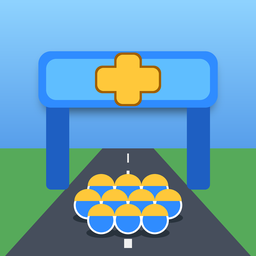

Gate Squad: Army RunPrivacy policy
Last updated: 16 October 2026
This policy explains what information the game Gate Squad: Army Run (“the game”) uses and why. The game is made by Wouter van Oosterhout, the Netherlands (“we”). Questions: vanoosterhoutwouter@gmail.com.
1. No account, progress stays on your device
You do not need an account to play. Your progress, settings and purchased items are stored only on your device. We do not run our own servers and we do not receive this data.
2. Advertising (Google AdMob)
The game shows ads through Google AdMob. To show and measure ads, Google may collect information such as your device's advertising identifier (IDFA), IP address, device type, iOS version, ad interactions and approximate location derived from the IP address.
- In the EU, EEA, UK and Switzerland you are asked for consent before personalised ads are shown. You can change your choice at any time in the game (sound menu → Privacy settings).
- App Tracking Transparency: iOS asks whether the game may use your advertising identifier. If you choose “Ask App Not to Track”, the identifier is not shared and you will see less relevant ads.
Google acts as an independent controller for this data. See how Google uses information from apps: policies.google.com/technologies/partner-sites and Google's privacy policy: policies.google.com/privacy.
Buying Remove Ads stops the ads that play between levels. Optional bonus videos you choose to watch stay available.
3. In-app purchases
Purchases are processed by Apple through the App Store. We do not receive your name, payment details or Apple ID. We only receive confirmation that a product was bought, so the game can unlock it.
4. Children
The game is not directed at children under 13 and we do not knowingly collect personal data from children.
5. Your rights
Under the GDPR you have the right to access, correct or delete personal data and to object to its use. Because we do not store personal data ourselves, requests about advertising data are best directed to Google. You can delete all game data by deleting the app. You may also file a complaint with the Dutch Data Protection Authority (Autoriteit Persoonsgegevens).
6. Changes
We may update this policy. The date at the top shows the latest version.